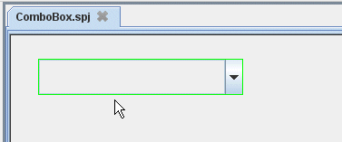
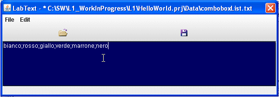
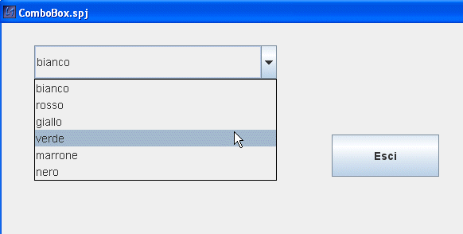

Input da ComboBoxIl combobox è anche detto menu a tendina. Si presenta come una finestra che una volta intercettato il click del mouse mostra una lista di possibile scelte. Per mostrare come si usa, faremo riferimento all'esempio HelloWorld. Realizziamo un nuovo frame che chiameremo ComboBox. Cliccare sul menu "ComboBox"
nella sezione "Inserimento Dati" (1), poi
portarsi con il mouse sul Frame (2), e cliccare per
inserire il Componente (3).
|
(3)  |
La finestra ora inserita deve essere configurata sia per salvare il valore selezionato in un file, sia per indicare da quale file va presa la lista dei testi che costituiscono le possibili selezioni. |
Proprietà ComboBox (inserimento dati)
|
 |
Qui al lato è mostrato il contenuto del file comboboxList.txt che riporta tutti i testi separati da ";". |
| A questo punto se si avvia il frame si otterrà il risultato mostrato qui al lato. Ora è necessario scegliere un file memoria della selezione. In quel file verrà memorizzata l'ultima selezione, e quindi tale informazione sarà disponibile per successive elaborazioni. |  |